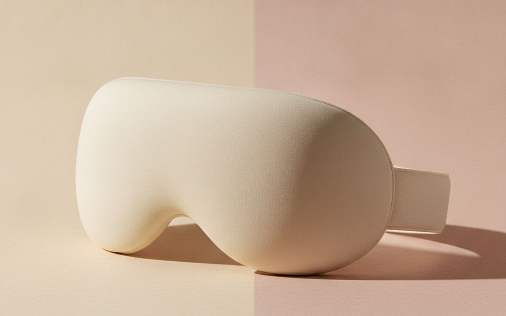
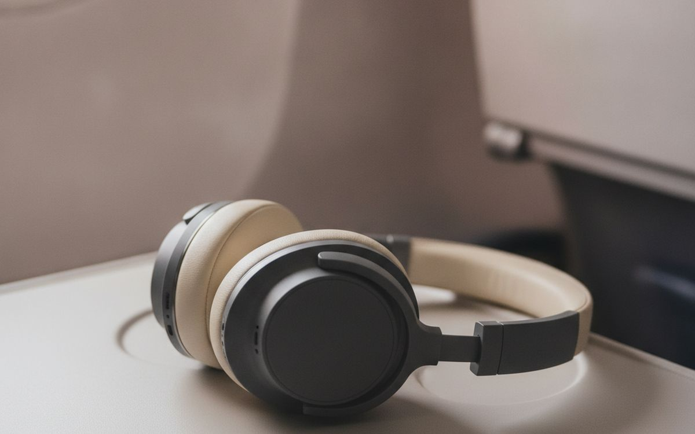
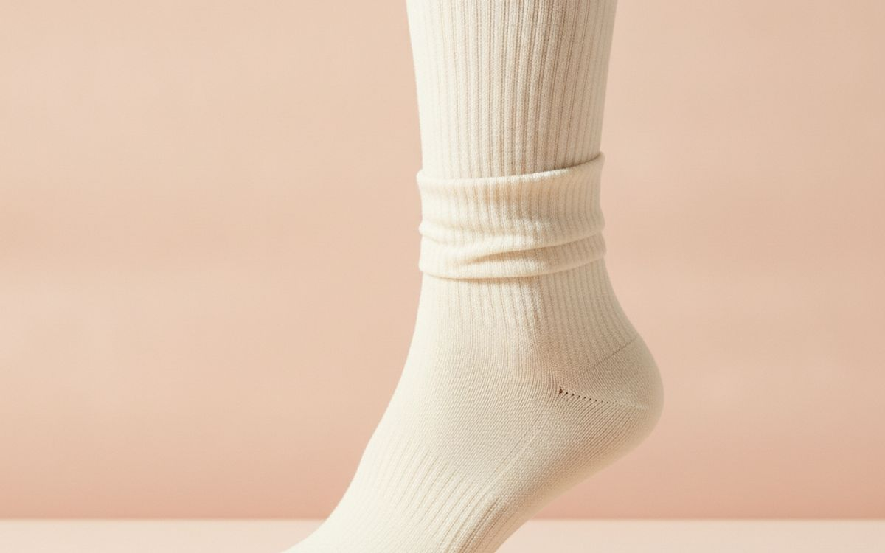
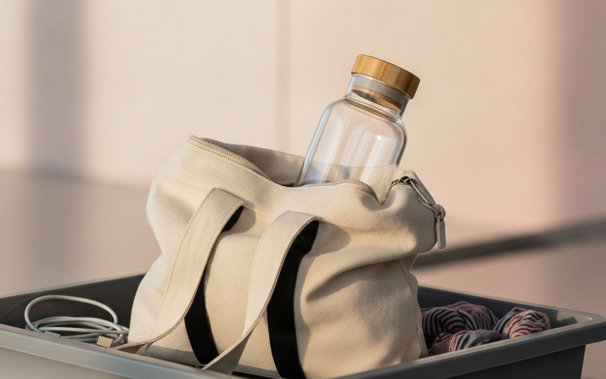
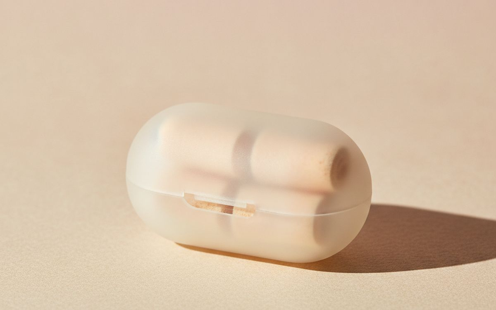
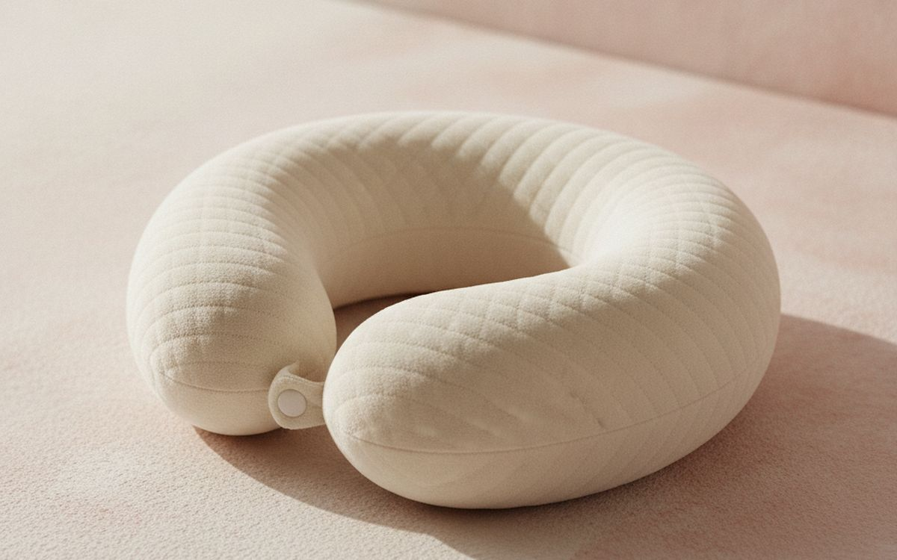
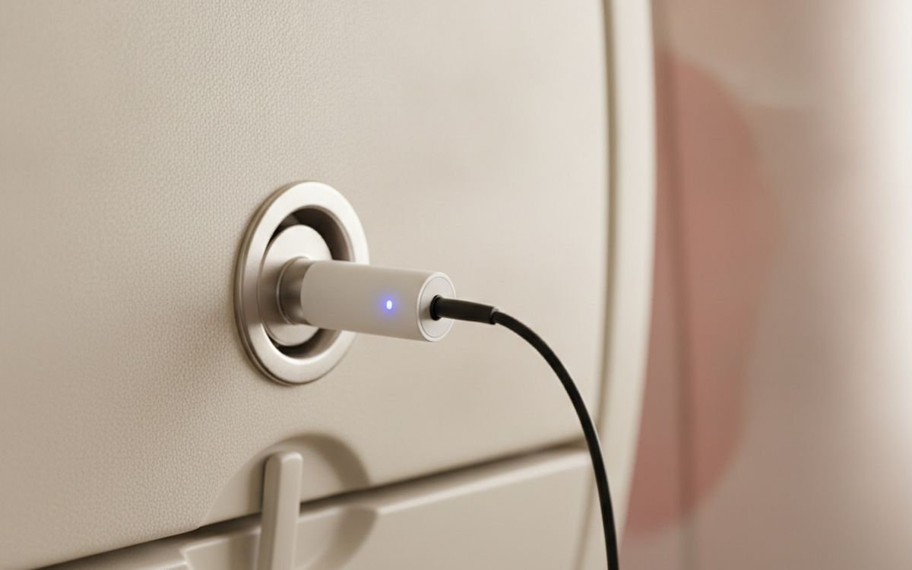
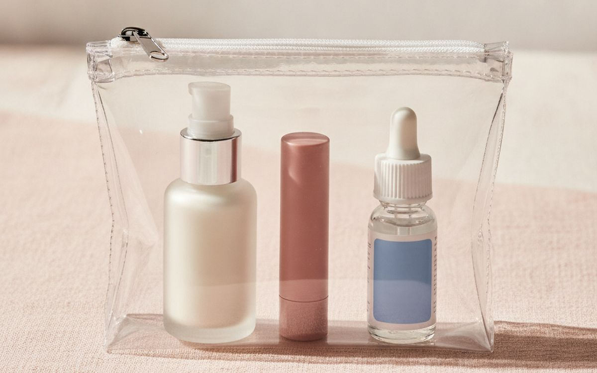
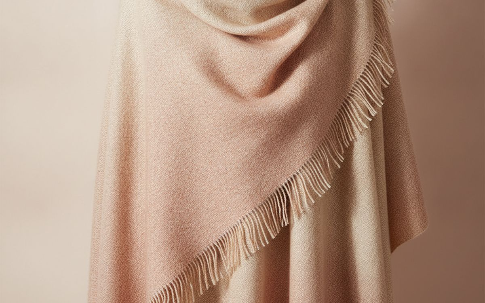
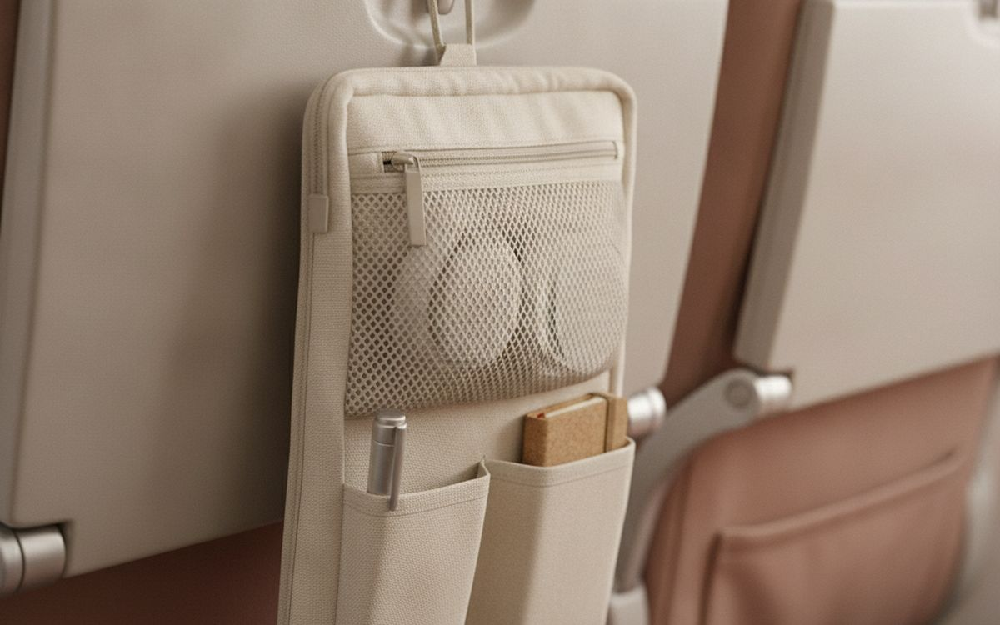

A 12-hour economy flight is mostly a battle against three things: noise, light and dry air. Most of the flight comfort aisle is devoted to inflatable pillows and gadgets that do little. The people who land feeling decent usually have a simple kit: a good eye mask, noise cancelling, water, and something to stop their legs swelling.
This list is ordered by how much each item helps you sleep and feel human on arrival. Everything fits in a small pouch under the seat.
Prices below are approximate street prices at the time of writing and move around constantly, especially during sale events. Treat them as a rough band for budgeting, not a quote. Always check the live listing before you buy.
En resumen
A contoured blackout eye mask
The cheapest sleep upgrade
Aviso. Los enlaces de esta página son de afiliados. Si compras a través de uno podemos ganar una comisión sin coste adicional para ti. No influye en qué entra en esta lista ni en su orden.
Cómo lo elegimos
These picks come from frequent-flyer communities, travel health guidance and long-run owner reports, cross-checked against current retail listings. We have not personally tested every item here. If you have circulation problems or a history of blood clots, talk to your doctor before a long flight.
De un vistazo
Los precios son aproximados en el momento de escribir y cambian a menudo.
Las recomendaciones

01 · The cheapest sleep upgradeA contoured blackout eye mask
Cabin lights, window shades and screens around you make sleep difficult. A contoured mask with cups that do not press on your eyes blocks light completely and is comfortable for hours. Flat masks leak light around the nose. It is the cheapest, most effective sleep upgrade for a long flight, and useful in hotels too. The case for it: blocks light completely, no pressure on eyes, and cheap. The trade-off is real: straps can be warm and cheap foam gets flat, so weigh that against how often it would actually get used.
$10-25Lo que aceptas: Straps can be warm
Por qué está aquí
- Blocks light completely
- No pressure on eyes
- Cheap
Conviene saber
- Straps can be warm
- Cheap foam gets flat

02 · Engine noiseNoise cancelling headphones or earbuds
Engine drone is tiring, even if you do not notice it. Active noise cancelling reduces it dramatically, making sleep easier and letting you listen at lower volume. Over-ear headphones cancel best; earbuds are better for sleeping on your side. Sony, Bose and Apple are strong choices at the top end, but mid-range models from Anker's Soundcore and similar do a good job. The case for it: reduces fatigue, helps sleep, and useful every day. The trade-off is real: over-ears are bulky for sleeping and needs charging before the flight, so weigh that against how often it would actually get used.
$80-350Lo que aceptas: Over-ears are bulky for sleeping
Por qué está aquí
- Reduces fatigue
- Helps sleep
- Useful every day
Conviene saber
- Over-ears are bulky for sleeping
- Needs charging before the flight

03 · Swollen legsCompression socks
Sitting still for hours makes feet and ankles swell and slightly raises the risk of blood clots. Graduated compression socks help circulation and reduce swelling. Get the right size by measuring your ankle and calf. Walk the aisle and flex your feet regularly too. The case for it: reduces swelling, helps circulation, and cheap. The trade-off is real: tight to put on and talk to a doctor if you have circulation issues, so weigh that against how often it would actually get used. Priced around $15-30, it is easy to justify even if it only ends up getting occasional rather than daily use.
$15-30Lo que aceptas: Tight to put on
Por qué está aquí
- Reduces swelling
- Helps circulation
- Cheap
Conviene saber
- Tight to put on
- Talk to a doctor if you have circulation issues

04 · Staying hydratedA large refillable water bottle
Cabin air is very dry, and dehydration makes jet lag and headaches worse. Carry an empty bottle through security and fill it airside, then ask the crew for refills. Drink steadily and go easy on alcohol and caffeine. The case for it: keeps you hydrated, saves buying bottled water, and reusable. The trade-off is real: must be empty at security and bigger bottles are bulky, so weigh that against how often it would actually get used. At $15-30, it earns its place on this list without asking for a big up-front commitment either way.
$15-30Lo que aceptas: Must be empty at security
Por qué está aquí
- Keeps you hydrated
- Saves buying bottled water
- Reusable
Conviene saber
- Must be empty at security
- Bigger bottles are bulky

05 · Backup and sleepFoam earplugs
Foam earplugs block noise cheaply and are comfortable for side sleeping. Use them with noise cancelling for the deepest quiet, or as a backup when your headphones run out of battery. The case for it: very cheap, great for side sleeping, and backup for headphones. The trade-off is real: can be uncomfortable for some and single-use foam gets dirty, so weigh that against how often it would actually get used. For $5-10, it is a small, low-risk addition to the list rather than a centrepiece purchase you need to think hard about.
$5-10Lo que aceptas: Can be uncomfortable for some
Por qué está aquí
- Very cheap
- Great for side sleeping
- Backup for headphones
Conviene saber
- Can be uncomfortable for some
- Single-use foam gets dirty

06 · Sleeping uprightA travel neck pillow (memory foam, wraparound)
Classic U-shaped inflatable pillows push your head forward. Wraparound or chin-supporting designs, like the Trtl style, hold your head more naturally. Memory foam is comfortable but bulky; clip it to your bag. Try it at home first. The case for it: supports your head upright, better sleep, and reusable. The trade-off is real: bulky to carry and designs suit different people, so weigh that against how often it would actually get used. Priced around $25-50, it is easy to justify even if it only ends up getting occasional rather than daily use.
$25-50Lo que aceptas: Bulky to carry
Por qué está aquí
- Supports your head upright
- Better sleep
- Reusable
Conviene saber
- Bulky to carry
- Designs suit different people

07 · Wireless headphones with seatback screensA Bluetooth audio transmitter
Most seatback screens still use a wired audio jack. A small Bluetooth transmitter plugs in and connects your wireless headphones. Choose one with low latency and long battery life. Some newer planes support Bluetooth directly. The case for it: use wireless headphones with seatback screens, small, and cheap. The trade-off is real: another device to charge and some pair poorly with certain headphones, so weigh that against how often it would actually get used. At $20-40, it earns its place on this list without asking for a big up-front commitment either way.
$20-40Lo que aceptas: Another device to charge
Por qué está aquí
- Use wireless headphones with seatback screens
- Small
- Cheap
Conviene saber
- Another device to charge
- Some pair poorly with certain headphones

08 · Dry cabin airMoisturiser, lip balm and eye drops
Dry cabin air dries skin, lips and eyes. Travel sizes of moisturiser, lip balm and lubricating eye drops, in your liquids bag, make a noticeable difference. Contact lens wearers should consider glasses for long flights. The case for it: relieves dryness, small, and cheap. The trade-off is real: liquids limits apply and scented products can irritate, so weigh that against how often it would actually get used. For $10-25, it is a small, low-risk addition to the list rather than a centrepiece purchase you need to think hard about. It is a minor purchase in the context of the whole set-up, but the kind that is easy to regret skipping once you notice the gap.
$10-25Lo que aceptas: Liquids limits apply
Por qué está aquí
- Relieves dryness
- Small
- Cheap
Conviene saber
- Liquids limits apply
- Scented products can irritate

09 · Cold cabinsA light layer or travel wrap
Cabin temperatures swing between warm and cold. A soft wrap or a light fleece works as a blanket and a pillow. Airline blankets are thin or not provided on some routes. The case for it: warmth on cold flights, doubles as pillow, and useful on arrival. The trade-off is real: takes bag space and bulky fabrics are hard to pack, so weigh that against how often it would actually get used. Priced around $20-50, it is easy to justify even if it only ends up getting occasional rather than daily use. None of that makes it essential for everyone reading this, only worth knowing about if the description above matches how you actually use the space.
$20-50Lo que aceptas: Takes bag space
Por qué está aquí
- Warmth on cold flights
- Doubles as pillow
- Useful on arrival
Conviene saber
- Takes bag space
- Bulky fabrics are hard to pack

10 · Keeping essentials handyA seat-back organiser pouch
A pouch that hangs on the tray table keeps your phone, earbuds, snacks and water within reach without digging into your bag. It is small, but it makes a long flight tidier. The case for it: essentials within reach, less rummaging, and cheap. The trade-off is real: easy to forget when leaving and not all seats allow hanging items during take-off, so weigh that against how often it would actually get used. At $10-20, it earns its place on this list without asking for a big up-front commitment either way. As with anything on this list, check the exact listing details and current price before adding it to a cart.
$10-20Lo que aceptas: Easy to forget when leaving
Por qué está aquí
- Essentials within reach
- Less rummaging
- Cheap
Conviene saber
- Easy to forget when leaving
- Not all seats allow hanging items during take-off
Preguntas frecuentes
How can I sleep better on a long flight?
An eye mask, noise cancelling or earplugs, a supportive pillow, and avoiding alcohol and caffeine.
Are compression socks worth it?
For long flights, yes. They reduce swelling and help circulation.
How do I avoid jet lag?
Stay hydrated, sleep on the plane if it matches destination night, and get daylight when you arrive.
Can I use wireless headphones on a plane?
Yes, with a Bluetooth transmitter for seatback screens or on planes that support Bluetooth.
Ofertas de hoy
Mira qué está rebajado ahora mismo.
Ofertas →← Todas las guías
Como afiliados de AliExpress, ganamos por las compras que cumplen los requisitos. Los precios y la disponibilidad son correctos en la fecha de publicación y pueden cambiar.